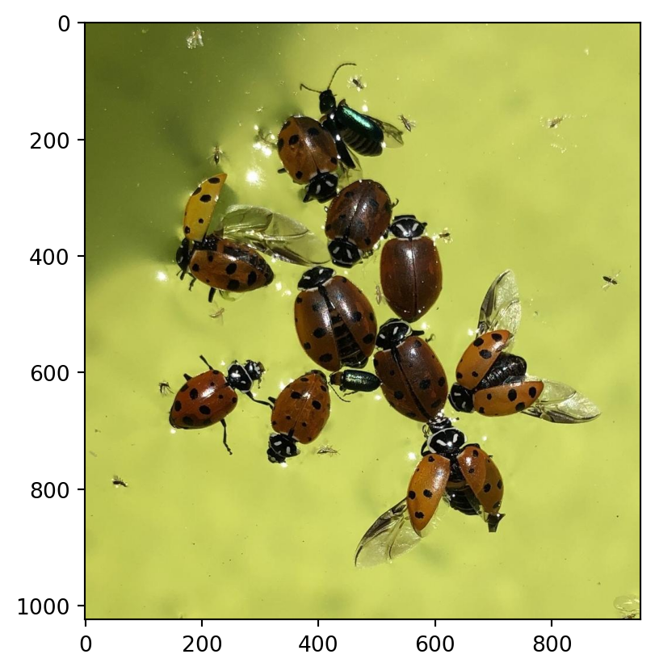
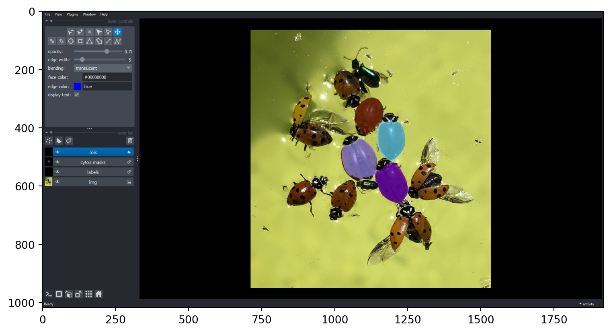
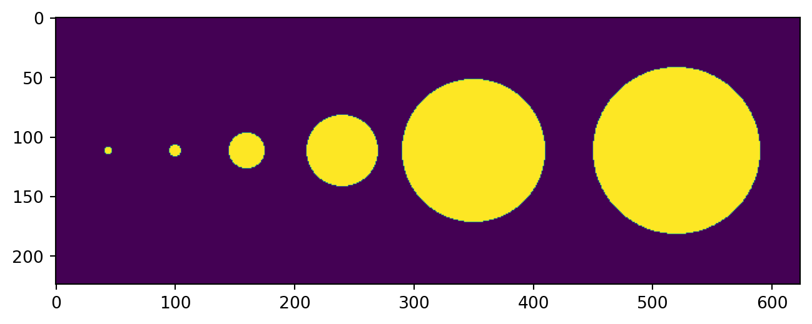
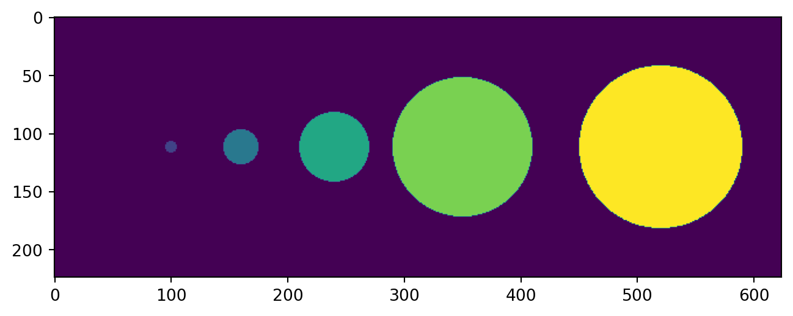

Notebooks and Widgets for Deep Learning
Notebooks and Widgets for Deep Learning
Notebooks
Notebook are fun
Widgets
Widgets are too
Figure 1: A line plot on a polar axis
Start

Napari is fun

Cellpose trained to learn scale
Use same Cellpose model to detect spheres of varying sizes in the same image
Common to use diameter parameter to rescale image
May not work if different scales in the same image


Dynamic
dynamic is pretty fun